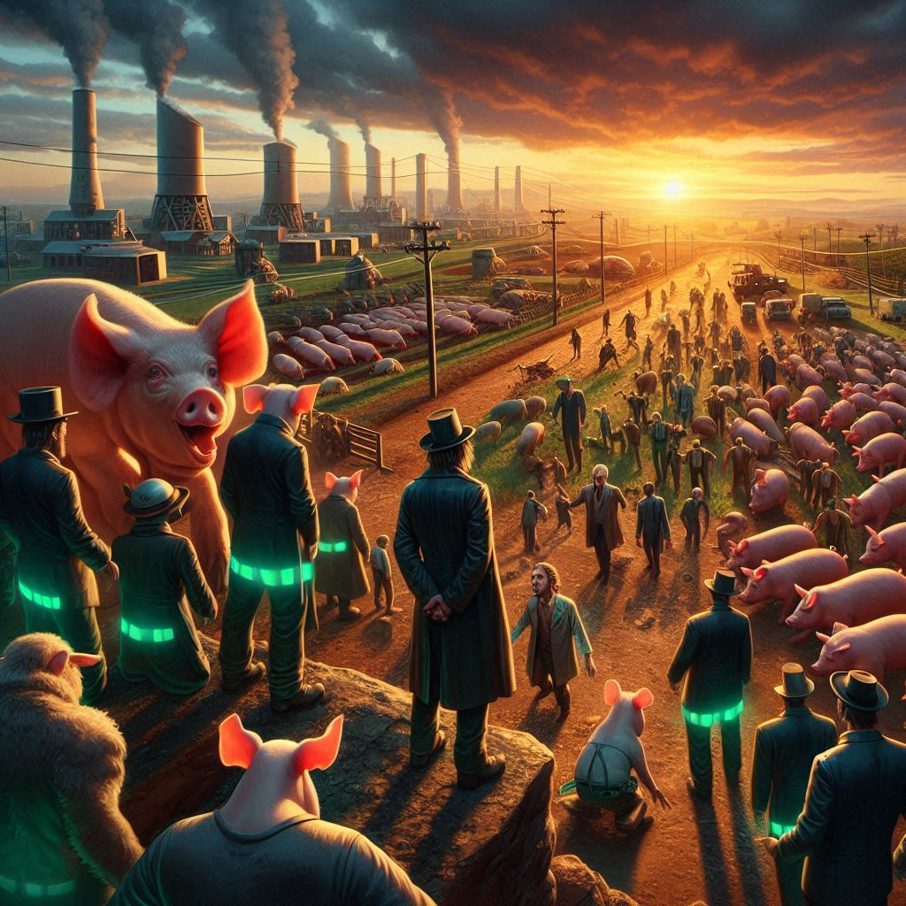

동물농장
목차
작가
조지 오웰 (George Orwell)
출판일
1945년
감상평에 대한 AI그림
단순히 "나만 잘 살면 되지" 라는 개인주의에 경종을 울리는 작품이라고 생각한다. 다 함께 잘못되어가는 타락한 세상에서 개인의 힘이 얼마나 나약할 지 체감하게 해준다.
그리고 권력이 분리 되어야 하는 이유 또한 다시 한 번 알게된다.
혁명에 성공하고 효율적인 농장 운영을 통해 모든 동물들의 영웅이었던 돼지가 역으로 그들을 착취하는 모습이 꼭 소설 속의 과장은 아니리라 생각했다.
어쩌면 아직 깨닫지 못했지만 난 이미 동물농장에 들어와 있는것 같다는 생각이 드는 무서운 작품이었다.

감상평에 대한 AI평가
이 감상평은 여러 요소들로 구성되어 있습니다. 각 요소를 설명하겠습니다.
✨ 개인주의와 공동체: 개인주의에 대한 경종을 울린다는 부분에서 작품의 중요한 주제를 이해하고 있습니다.
✨ 권력의 분리: 권력이 분리되어야 하는 이유를 다시 깨달았다는 부분은 정치적, 사회적 메시지를 전달하고 있습니다.
✨ 현실과의 연결: 돼지가 영웅에서 착취자로 변하는 모습이 단순한 과장이 아니라고 느낀다는 점에서 현실과의 연결을 표현하고 있습니다.
✨ 개인적인 감상: 자신이 이미 "동물농장"에 들어와 있다는 생각이 든다는 부분에서 감상평의 개인적인 면모가 돋보입니다.